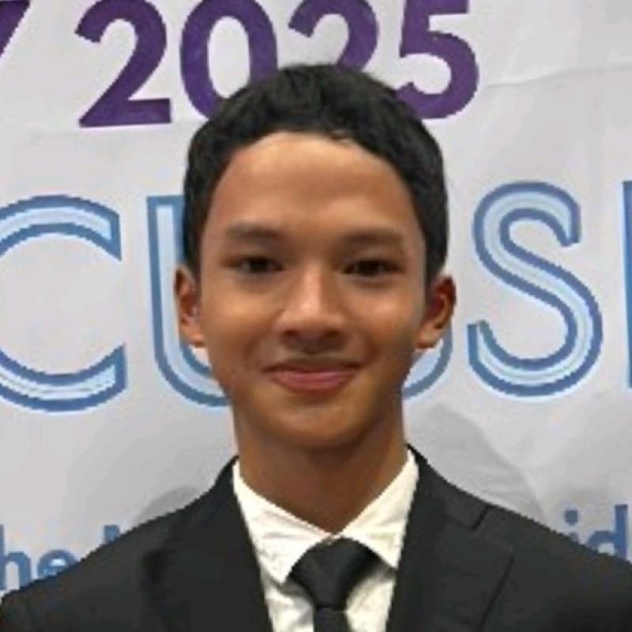

PERSONAL PROFILE

Deka Messi Araya
Student Researcher & Innovation Enthusiast
PELAJAR · RISET · INOVASI
Saya Deka Messi Araya. Saya tertarik pada riset, kecerdasan buatan, dan teknologi yang menjawab masalah nyata—dari lingkungan hingga pendidikan.
⌁ Jombang, Jawa Timur, Indonesia

Student Researcher & Innovation Enthusiast
Saya senang mempelajari bagaimana riset dan teknologi dapat diterapkan untuk menjawab tantangan sehari-hari. Ketertarikan saya mencakup artificial intelligence, pengembangan perangkat lunak, keberlanjutan lingkungan, dan pendidikan.
Saya juga menikmati kolaborasi, berbagi pengetahuan, dan membangun inisiatif bersama anak muda lain—sambil terus belajar dari prosesnya.
Beberapa area yang sedang saya eksplorasi melalui riset, kolaborasi, dan pengembangan.
Eksplorasi asisten AI untuk membantu UMKM Indonesia mengakses ide, informasi, dan dukungan operasional.
Dalam pengembanganInisiatif pembelajaran dan kurikulum untuk membantu pelajar mengenal riset serta mengembangkan gagasan mereka.
Inisiatif kolaboratifProyek machine learning untuk mengeksplorasi deteksi awal indikator kesehatan mental dari pola data, dengan fokus pada penggunaan yang bertanggung jawab dan bukan sebagai diagnosis klinis.
Proyek ML · EksplorasiEksplorasi gagasan dan kesadaran lingkungan yang berfokus pada isu sungai dan keberlanjutan.
Eksplorasi proyekBeberapa momen dari kegiatan, kolaborasi, dan proses mencoba hal baru.


Pengalaman akademik dan kegiatan yang membentuk perjalanan saya sejauh ini.
Pengalaman mengikuti kompetisi, menulis, dan kegiatan pengembangan diri di tingkat pelajar.
Keterlibatan dalam SINTECH dan pengembangan inisiatif pembelajaran bersama komunitas.
Mengembangkan kemampuan menyusun pertanyaan, menelusuri bukti, dan menyampaikan gagasan secara terstruktur.
Untuk rincian pencapaian terbaru dan informasi profesional, kunjungi profil LinkedIn saya.
ADA IDE ATAU KESEMPATAN KOLABORASI?
Saya terbuka untuk belajar, berdiskusi, dan berkolaborasi dalam proyek yang berdampak.